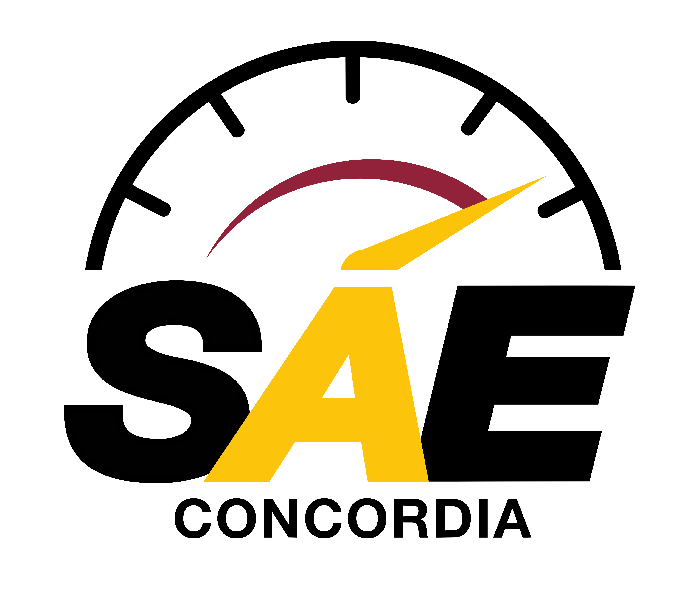
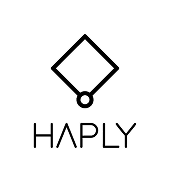

PROJECT TEMPLATE / 01
Your first project
A place for the problem, the process, and what you learned.
View projectMECHANICAL ENGINEERING
I’m Chelsea, a Mechanical Engineering Co-op student at Concordia University. This is my space for hands-on design, manufacturing, experiments, and gingerbread creations.
Explore the projects01 / THE WORK
The process matters as much as the result.
Template previews below — projects will be added once selected.
PROJECT TEMPLATE / 01
A place for the problem, the process, and what you learned.
View project
PROJECT TEMPLATE / 02
A build, class project, or question worth exploring.
View project02 / GINGERBREAD LABS
A photo journal of my gingerbread house creations.

03 / THE PATH
Mechanical design, manufacturing, teaching, and the teams that bring it all together.
Chelsea Kezber Resume (PDF)2023 – 2028 (expected)
Bachelor of Engineering · Mechanical Engineering Co-op
August 2021 – June 2023
DEC in Pure and Applied Science
September 2025 – Present
Concordia Baja Racing · SAE

March 2025 – May 2025
Concordia SAE
September 2024 – January 2026
Concordia Baja Racing · SAE
July 2026 – Present
Concordia University
January 2026 – September 2026
Haply Robotics

August 2025 – December 2025
Concordia University
September 2024 – December 2024
Pratt & Whitney Canada
May 2024 – Present
St. George’s School
April 2022 – December 2024
Westmount YMCA
04 / CURIOSITY
Design & 3D printing. I enjoy designing and rendering objects in SolidWorks and Onshape, then bringing prototypes to life with 3D printing.
Karate. A first Dan black belt with 11 years of experience and four years competing at provincial and national levels.
Sailing. CANSail 4, with three years of sailing competition experience.
Cooking. Five years working as a line cook, and an ongoing curiosity about new techniques, recipes, and the science behind cooking.
05 / BACKGROUND
I’m Chelsea, a Mechanical Engineering Co-op student at Concordia University in Montreal, with graduation expected in 2028. My experience spans mechanical design, manufacturing process development, prototyping, and teaching.
Through Concordia Baja Racing, I’ve led a team of more than 40 members and now focus on suspension design, analysis, manufacturing, and testing. I enjoy taking an idea from a CAD model to something I can build and test.
I work in both French and English. This portfolio is a place to share my projects, what I learn along the way, and my Gingerbread Labs creations.
Chelsea Kezber ResumeDownload PDF
Connect on LinkedIn